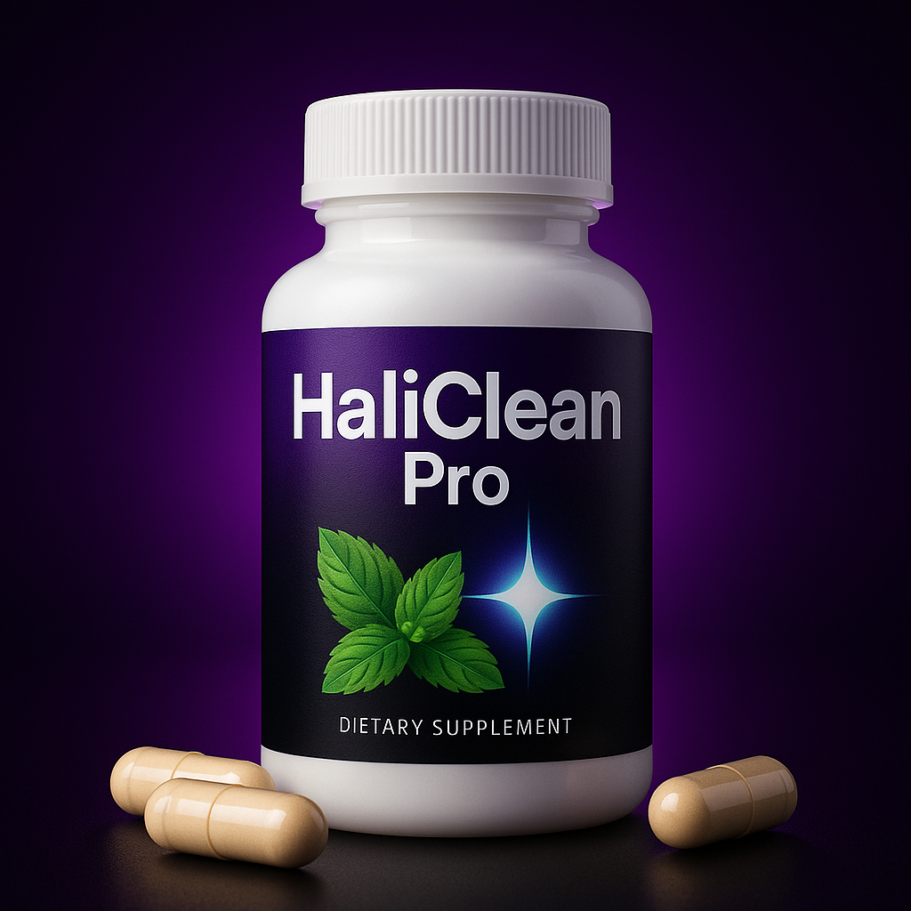

🌿 Receita Natural Para Acabar com o Mau Hálito
Você sabia que o mau hálito pode ser causado por desequilíbrios digestivos, bactérias e maus hábitos alimentares? A boa notícia é que existe uma receita simples, 100% natural, que pode ajudar você a combater isso rapidamente.
Apresentamos uma receita caseira exclusiva que vem sendo usada por centenas de pessoas para restaurar o frescor do hálito de forma natural e sem efeitos colaterais.

✅ Ingredientes naturais encontrados na sua cozinha
✅ Receita rápida de preparar em casa
✅ Elimina bactérias causadoras do mau hálito
✅ Resultados visíveis em poucos dias
📢 O que estão dizendo:
"Minha boca amanhecia seca e com gosto ruim, agora sinto frescor o dia todo!" – Ana R.
"Simplesmente maravilhoso. Uma receita que mudou minha rotina e minha confiança!" – Lucas M.
Quero acessar a receita agora! 🍋